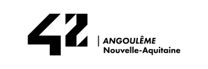

2025

Technicien informatique / Support et maintenance
Diagnostic, réparation, installation et assistance aux utilisateurs.
PORTFOLIO · BTS SIO SLAM
À la recherche d’un stage de 2e année
Développement backend · Systèmes · Cybersécurité
Comprendre, développer et expérimenter. Je construis mes compétences à travers ma formation, mes projets et mes expériences professionnelles.
01 / À PROPOS
Passionné par l’informatique depuis mon adolescence, je développe mes compétences à travers ma formation, mes projets, mes expériences professionnelles et mon apprentissage personnel. Je m’intéresse particulièrement au développement backend, aux systèmes, à la cybersécurité et au cloud, avec pour objectif à long terme de m’orienter vers le MLOps.
Vers 13 ans, mes premières formations chez InfoTech Kamgar, en Afghanistan, m’ont familiarisé avec Windows, le matériel, Internet et la bureautique. J’ai ensuite commencé le HTML/CSS et le C++. La période du Covid et un accès limité à Internet ont interrompu cet apprentissage, sans arrêter ma curiosité. Co’ordi, la Piscine de 42 puis le BTS m’ont permis de la transformer en pratique.
02 / PARCOURS

Diagnostic, réparation, installation et assistance aux utilisateurs.

Une immersion intensive dans le C, Linux et l’apprentissage entre pairs.
Des bases solides en développement, données, réseaux et cybersécurité.
Développement backend, sécurité et déploiement dans un projet en binôme.
Approfondissement technique et préparation aux épreuves E5/E6.
Backend, cybersécurité, cloud ou domaines associés.
OBJECTIF PROFESSIONNEL
BTS SIO SLAM → Bac+3 Informatique / Cloud / DevOps → Bac+5 IA / Data / Cloud → MLOps
Un projet de poursuite d’études pour relier développement, cloud, DevOps et apprentissage automatique.
03 / RÉALISATIONS
Projet de stage réalisé · En binôme
API, données, sécurité et infrastructure d’une application de suivi des stages. Mon rôle : backend ; Lenny Paul : principalement le frontend Flutter Web.
Projet en cours d’amélioration · Individuel
Application PHP MVC de gestion des frais, développée à partir du cahier des charges fourni par le professeur. Module visiteur avancé ; comptabilité en construction.
Projet terminé · Individuel
Gestion des articles et fournisseurs dans une application Windows Forms : CRUD, tri, validations et base relationnelle.
Projet BTS
Client Python pour une API REST de tournoi e-sport militaire français. Authentification, ressources et menu en ligne de commande.
Projet pédagogique
Jeu console C# : déroulement des parties, évaluation des mains et persistance des scores.
Progression en BTS
Des premiers formulaires aux applications MDI, en C# Windows Forms et Python.
Projet personnel
Expérimentations d’un LLM local et d’un agent connecté à WhatsApp : configuration, règles d’outils et dépannage.
04 / EXPÉRIENCES
Lycée Professionnel Jean Jaurès — Aubusson
Développement du backend d’une application de gestion des PFMP pour les élèves, les enseignants et les administrateurs : API REST, données MySQL, sécurité et règles métier.
Roman : backend ASP.NET Core, EF Core / MySQL, sécurité et
initiatives Docker, Nginx et déploiement.
Lenny Paul :
principalement le frontend Flutter Web.
05 / COMPÉTENCES
C#, Python, PHP, C, HTML/CSS et JavaScript.
PFMP, Tonton, GSB, Aux Claviers, 42 et TPs.
ASP.NET Core, REST/JSON, EF Core, JWT, rôles et autorisations, ADO.NET et PDO.
PFMP, Tonton et ApplicationFrais.
MySQL, MariaDB, SQL, modélisation relationnelle, CRUD et requêtes paramétrées.
PFMP, Tonton et ApplicationFrais.
Linux, DNS Bind9, VLAN, NAT, pare-feu, redirection de ports, iptables et Wireshark.
Travaux BTS et environnement de test PFMP ; éléments décrits dans mon CV.
Linux, Nmap, ffuf et sécurité des applications. Hashcat et SQLMap en apprentissage.
Modules HTB et authentification PFMP.
Docker/Compose, Nginx, reverse proxy, volumes, variables d’environnement, sauvegarde/restauration MySQL. Git/GitHub, Visual Studio, VS Code, XAMPP et Laragon.
Infrastructure PFMP et environnement des projets.
Correspondances proposées à partir des réalisations et du référentiel RNCP40792. Elles ne constituent pas une validation des compétences ni un tableau de synthèse définitif.
| Réalisation | Compétence mobilisée | Éléments / limites |
|---|---|---|
| PFMP | Gérer le patrimoine informatique ; travailler en mode projet ; mettre à disposition des utilisateurs un service informatique | Habilitations, sauvegardes, binôme et déploiement de test. Compléter les traces de planification et de recette. |
| ApplicationFrais | Concevoir et développer une solution applicative ; gérer les données | MVC, PDO et base relationnelle. Module comptable incomplet ; maintenance à documenter. |
| Tonton Primeur | Concevoir et développer une solution applicative ; gérer les données | WinForms, ADO.NET, CRUD et intégrité référentielle. |
| Aux Claviers | Concevoir et développer une solution applicative | Client REST Python et composants réutilisables. |
| Co’ordi | Répondre aux incidents et aux demandes d’assistance et d’évolution | Diagnostic, dépannage, préparation et assistance. Attestation attendue. |
| 42 / HTB | Organiser son développement professionnel | Apprentissage autonome, exercices et modules. Traces à conserver. |
La présence en ligne d’une organisation n’est pas considérée comme acquise par la seule existence de ce portfolio. Les compétences de cybersécurité doivent rester proportionnées aux preuves disponibles.
Référentiel officiel — France Compétences ↗
À confronter aux consignes de la session 2027 et à valider avec l’équipe pédagogique.
Documents officiels SIEC — Session 2026 ↗E5 : support et mise à disposition de services informatiques. E6 SLAM : conception et développement d’applications. Les projets PHP, C# et Python documentent surtout les compétences de développement ; leur présence au portfolio ne suffit pas à valider l’ensemble du bloc E5.
06 / FORMATIONS
CISCO NETWORKING ACADEMY
Formation terminée le 2 septembre 2026, proposée par le BTS SIO lycée J. Jaurès, Aubusson. Enseignant : Roumaneix Doryan.
Consulter l’attestation ↗APPRENTISSAGE CONTINU
Roman Salamzada · @D4rkne33
Niveau 21 · Rang Apprentice
État
communiqué en septembre 2026.
Formations en informatique et en anglais : Windows, matériel, Internet, Word, Excel et PowerPoint.
Les documents de formation de cet institut ne sont pas présentés comme une certification officielle Microsoft.
Participation au processus d’admission — Piscine, du 4 au 29 août 2025.
EN DEHORS DU BTS
Hack The Box · 17–21 septembre 2026 · Blue Team et investigation.
Préparation : SIEM, journaux et Windows Event Logs, threat hunting, réponse à incident, forensics, PCAP, Linux, notions d’analyse de malwares et corrélation d’événements.
07 / VEILLE TECHNOLOGIQUE
L’industrialisation, le déploiement et le suivi des modèles d’intelligence artificielle.
Un fil conducteur entre mon expérience backend, les conteneurs et mon objectif professionnel.
Documentation MLflow — suivi des expériences
Centraliser les sources et flux RSS disponibles, consulter les nouveautés chaque semaine, sélectionner les changements utiles, puis conserver une fiche datée : source, évolution, intérêt, apprentissage et expérimentation possible.
Les abonnements et alertes ne sont pas encore documentés.
Statut : source vérifiée lors de la préparation du portfolio ; lecture personnelle et expérimentation à compléter.
Source : MLflow — ML Experiment Tracking (consultation du 7 septembre 2026).
Point observé : le suivi regroupe paramètres, métriques et artefacts des expériences. Cette fiche est un point de départ, pas l’annonce d’une nouvelle version.
Intérêt : comparer les essais et retrouver les éléments associés à un modèle.
Prochaine étape : réaliser deux essais, comparer leurs métriques et rédiger mon retour d’expérience. Aucun essai n’est revendiqué ici comme déjà réalisé.
Synthèse initiale : déployer un modèle implique aussi de suivre ses expériences et son cycle de vie. Le journal sera enrichi de lectures et d’essais personnels datés.
08 / CONTACT
À la recherche d’un stage de deuxième année en backend, cybersécurité ou cloud.
Guéret · 2025 — sélectionnez une photo pour l’agrandir.
Lycée Professionnel Jean Jaurès — Aubusson
PFMP Manager centralise les stages, les journaux quotidiens, les présences et la messagerie des élèves, enseignants et administrateurs.
Roman : développement backend, API REST ASP.NET Core, MySQL / EF Core, sécurité, règles métier et initiatives Docker, Nginx et déploiement. Lenny Paul : principalement l’interface Flutter Web. Je n’ai pas développé l’interface Flutter ; j’ai assuré son intégration avec le backend. L’espace enseignant dédié n’est pas encore raccordé au frontend.
18 tâches issues des post-its d’origine. Plusieurs post-its partageaient la même référence : les doublons A2.1, A2.5 et A2.6 sont conservés volontairement.
J’ai développé le backend en C# avec ASP.NET Core Web API et Entity Framework Core : contrôleurs et endpoints pour l’authentification, les PFMP, les organisations, le journal quotidien, les présences, la messagerie et l’administration.
J’ai relié l’API à MySQL et préparé les échanges JSON nécessaires à l’intégration du frontend Flutter Web réalisé principalement par Lenny Paul.
/api/login · /api/pfmp · /api/dashboard · /api/journal · /api/entreprises · /api/demarches · /api/messages · /api/admin/...
J’ai approfondi la sécurité et les règles métier, puis ajouté la conteneurisation, Nginx et le déploiement. Docker, Nginx et le déploiement ne faisaient pas partie des missions confiées par le professeur.
JWT Access Token et cookie HttpOnly, Refresh Token et endpoints refresh / logout avec expirations distinctes. Empreinte navigateur FGP et hash, validation du fingerprint dans le JWT. TokenFamilyId, rotation des refresh tokens, révocation des anciens tokens, détection de réutilisation d’un token révoqué et révocation de toute sa famille.
Vérification de la démarche préalable, détection des chevauchements, contrôle des dates, du planning, des horaires et des heures, de la durée hebdomadaire, de l’organisation et des informations obligatoires.
ICurrentUserService, IRoleService, IPfmpAccessService et IPlanningValidationService : séparation des responsabilités, réduction de la duplication et maintenance facilitée.
Contrôles selon l’utilisateur courant, son rôle, sa relation avec la PFMP et les permissions propres à chaque action.
Initialisation des journées, mise à jour des présences, absences, retards et justificatifs ; contrôle de la période de PFMP et des droits selon le rôle.
Gestion des organisations au-delà de la simple recherche, avec contrôle des informations nécessaires aux PFMP.
Vérification du droit d’accès à la PFMP avant toute lecture ou tout envoi de message.
Conteneurs API, MySQL et frontend, orchestration Docker Compose, communication entre conteneurs, variables d’environnement, volume MySQL persistant, healthcheck, ports et démarrage coordonné.
Distribution de Flutter Web, routage SPA et reverse proxy /api vers ASP.NET Core.
Configuration de production avec Docker et Nginx : ports, pare-feu, réseau, variables d’environnement, persistance MySQL, sauvegarde / restauration et résolution des problèmes de déploiement.
API REST ASP.NET Core · C# / POO · EF Core / MySQL · LINQ · intégration JSON / HTTP · validation métier et intégrité des données
JWT · HttpOnly · rotation des refresh tokens · fingerprint · autorisations par rôle et contexte · séparation des responsabilités
Docker / Docker Compose · volumes et healthchecks · Nginx / reverse proxy / SPA · configuration de production · ports et réseau · sauvegarde / restauration MySQL
Intégration frontend / backend · débogage et dépannage · Git / GitHub · travail en équipe · documentation technique
Flutter Web : contexte d’intégration frontend / backend.
Projet de stage réalisé. Certaines interfaces enseignants, les tests et la mise en production HTTPS restent à consolider ; le projet n’est pas présenté comme prêt pour la production.
13 captures du résultat de l’équipe. Interface Flutter Web principalement réalisée par Lenny Paul ; backend, API, sécurité, données et déploiement principalement réalisés par Roman.